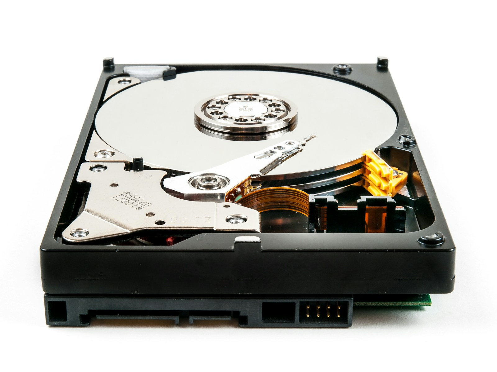

Comment nous effaçons vos données
Vos données sont la première chose que nous traitons, avant toute réparation et avant tout test. Voici, étape par étape, ce qui se passe entre l'enlèvement et le certificat.
1. Réception et inventaire par numéro de série
Chaque appareil est enregistré à l'atelier sous son numéro de série et rattaché à votre code de suivi. Chaque disque ou support de stockage est inventorié séparément, avec son propre numéro de série quand il en possède un ; à défaut, il est identifié par le numéro de série de l'appareil qui le contient. Cet inventaire est comparé au bordereau signé à l'enlèvement : rien n'entre, rien ne sort sans trace.
2. Stockage verrouillé
Entre la réception et l'effacement, le matériel est conservé dans une zone fermée à clé de l'atelier, accessible uniquement aux personnes chargées de l'effacement. Aucun appareil n'est confié à la réparation, testé ni exposé avant que son stockage ne soit effacé. La date de réception et la date d'effacement sont toutes deux notées dans notre registre.

3. Effacement : une méthode selon le support
Chaque disque est effacé selon la norme NIST 800-88 : Purge quand le matériel le permet, Clear sinon. Pour un SSD, nous utilisons la commande d'effacement interne du disque (Sanitize en NVMe, Sanitize ou Secure Erase en SATA) : c'est le contrôleur du disque qui efface, y compris les zones que l'ordinateur ne voit pas. Pour un disque dur mécanique, la commande Secure Erase du disque atteint le niveau Purge ; à défaut, une écriture complète en une passe atteint le niveau Clear. Sur un support chiffré depuis sa mise en service (chiffrement du système, disque auto-chiffrant, smartphone chiffré), la destruction de la clé de chiffrement, appelée effacement cryptographique, atteint le niveau Purge à condition que le chiffrement et la destruction de la clé soient vérifiables ; sinon, nous complétons par un effacement classique. Pour les portables à stockage soudé et les smartphones, nous passons par la réinitialisation d'usine du système, qui détruit la clé de chiffrement, et nous notons le niveau réellement atteint. Le niveau retenu, Clear ou Purge, est inscrit sur le certificat, disque par disque.
4. Vérification
Après l'effacement, l'outil relit le support : lecture complète ou lecture d'échantillons répartis sur tout le disque, selon la méthode et la taille. Le contenu lu est comparé à ce qui est attendu (secteurs vides ou motif connu). Le rapport de vérification reçoit une empreinte numérique, qui est reportée sur le certificat. Si la vérification échoue, le disque repasse en effacement ; s'il échoue une seconde fois, il part en destruction physique.
5. Certificat par disque
Vous recevez un certificat par disque, pas un certificat par lot. Il reprend le numéro de série du disque et de l'appareil qui le contenait, la méthode utilisée (Clear ou Purge, et la commande exacte), l'outil et sa version, la date, l'opérateur, le résultat de la vérification et son empreinte. Il est envoyé en PDF, rattaché à votre code de suivi, et conservé dans notre registre. Pour une entreprise, l'ensemble des certificats est regroupé avec le bordereau de traçabilité.
6. Disques non effaçables : destruction physique et attestation
Un disque qui ne répond plus (panne électronique, secteurs illisibles, contrôleur muet) ne peut pas être effacé par logiciel et ne peut pas être réemployé. Il est alors détruit physiquement à l'atelier, plateaux ou puces mémoire compris, puis remis à un éco-organisme agréé. Vous recevez une attestation de destruction avec le numéro de série, la date, la méthode et l'opérateur, à la place du certificat d'effacement. Si vous l'avez demandé dans le formulaire, ce disque vous est rendu tel quel.
Ce que nous ne promettons pas : une garantie absolue, que personne ne peut donner. Ce que nous promettons : une méthode reconnue, une vérification après effacement, une trace écrite par disque, et la possibilité de garder votre disque si vous le souhaitez.
Ce que contient le certificat
| Champ | Contenu | À quoi il sert |
|---|---|---|
| Numéro de série du disque | Numéro gravé par le fabricant, lu par l'outil | Rattacher le certificat à un support précis |
| Appareil hôte | Marque, modèle et numéro de série de l'ordinateur ou du téléphone | Faire le lien avec le bordereau de traçabilité |
| Type de support | HDD, SSD SATA, SSD NVMe, stockage soudé (eMMC, UFS), carte mémoire | Justifier la méthode choisie |
| Méthode | Niveau NIST 800-88 (Clear ou Purge) et commande utilisée (Sanitize, Secure Erase, effacement cryptographique, écriture une passe) | Savoir exactement ce qui a été fait |
| Outil et version | Nom du logiciel d'effacement et numéro de version | Retrouver le comportement exact de l'outil |
| Date et heure | Début et fin de l'effacement | Dater l'opération |
| Opérateur | Identifiant de la personne qui a lancé et vérifié l'effacement | Savoir qui a fait quoi, en cas de question |
| Résultat de vérification | Réussite ou échec, part du disque relue | Confirmer que la relecture a été faite |
| Empreinte de vérification | Empreinte numérique (somme de contrôle) du rapport de vérification | Détecter toute modification ultérieure du rapport |
| Code de suivi | Votre code de suivi Réemploi 74 | Retrouver le certificat depuis votre suivi |